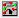
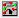

Parts are stored in libraries. In addition, you can create your own parts in custom libraries. Some library parts have a convert as well as the normal graphical representation. Many packages contain more than one part, in which case you may need to specify which of the parts to place.
To place a part:
-
From the Place menu, choose the .
The Place Part window is displayed. For more information, see Searching for a part in the libraries. -
From the Parts list, select the part you wish to place.

When you select a part, the PSpice symbol (
 ) is
displayed for a part that can be simulated
using PSpice and the layout symbol () is
displayed for a part that is supported for PCB
Editor flow. The symbols are displayed below
the Packaging box.
) is
displayed for a part that can be simulated
using PSpice and the layout symbol () is
displayed for a part that is supported for PCB
Editor flow. The symbols are displayed below
the Packaging box.
Remember the following, when you are are placing.
- To place a convert version of the part, select Convert in the Graphic group box.
-
If the package contains more than one part, select
one of the parts from the drop-down list in the
Packaging group box.
The part appears in the preview box. -
In case of a heterogeneneous part, you need to decide which part in the package you want at this time, because you will not be able to change the part in the package after the part is placed.

Whether the part is homogeneous or heterogeneous, if you are placing multiple copies of the same part in the package, you do not need to specify the part number at the time of placing the part. Capture will auto-increment the part numbers as you keep placing the parts on the schematic.
-
Click the Place part button.
OR
Press Enter.
An image of the part is attached to the pointer.
PressF6to change the cursor to a crosshairs to place the part at a specific location. - Move the part image and click to place the part.
- Press the ESC key or select another tool to dismiss the part that is attached to the pointer.
The first time a part is placed, a copy of the part is created in the design cache.
When you place a part off-grid, it remains off-grid throughout any cut-and-paste and drag-and-drop operations. If you place parts so that two pins meet end to end, the pins are connected.
OrCAD recommends that you connect the pins of the parts using a wire, and avoid placing parts in a way that two pins meet end to end. This is because, parts with direct pin-to-pin connections produce a system-generated net name to establish the connection and:
- Capture will not allow you to assign your own net name in the place of the system-generated net name.
- Searching for the system-generated net name can be difficult if you are not aware of the pin to pin connection.
- If you move the parts after creating the netlist, the system-generated net name might change. This may cause net name conflicts when you run back-annotation.
It is recommended that you do not connect a power symbol directly to a power pin. Connect the power symbol to the power pin using a wire.
You can place a part in the middle of a wire segment without redrawing the wire by placing the part over the wire such that two pins on the part connect with the wire segment. Then click over the part with the TAB key pressed until just the overlapping wire segment is selected. Finally, delete the wire segment.
Do not change the reference designators of heterogeneous parts for a complex hierarchical design manually. In case you want to change the reference designator for a part placed in the schematic page, delete the part and add it again. This way all the occurrences will get updated correctly.
When you place a part, make sure that the Automatically reference placed parts check box is selected in the Miscellaneous tab of the . This will ensure that the part references for the newly placed part are unique.
Shortcut
Tool palette:
T o uniquely identify parts
- In the project manager, select schematic folders or schematic pages, if you want to process only a portion of the design. If you want to process the entire design, leave the schematic folders or schematic pages unselected.
-
From the Tools menu, choose .
The appears.
Verify that the dialog box options are set the way you want them. For example, you specify whether to update the entire design or only the schematic folders or pages selected in the project manager, whether to assign part references to all parts or to only those that have not been previously updated, or whether to return all the part references to the unassigned state (such as C? or U?A). Note that if you choose the Reset reference numbers to begin at 1 in each schematic option, it is possible that part references will be duplicated within a schematic folder that contains multiple pages. - Click OK.
If you copy a part into the Clipboard and then paste it onto a schematic page, Capture will automatically assign a unique reference designator to the pasted part when the following two conditions are met:
- The Auto Reference option on the of the Preferences dialog box is selected.
- The pasted part has a reference designator assigned to it when it is copied to the Clipboard.
Capture assigns the reference designator, updated to the next available value (one greater than the highest value used on the schematic at that point). If the pasted part has a default reference (for example, R?) Capture does not assign a unique reference designator to it.
Shortcut
Toolbar: